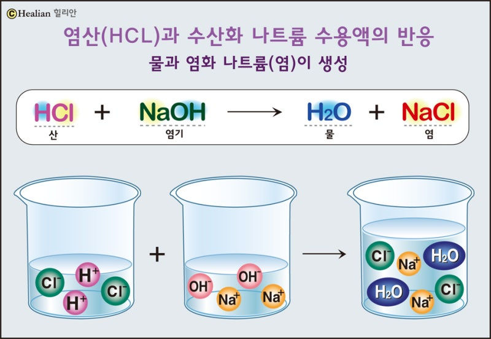
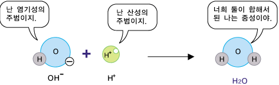

중화반응이란?
중화반응은 산과 염기가 반응하여 물과 염을 생성하는 반응입니다.
산 + 염기 → 염 + 물
HCl + NaOH → NaCl + H2O
수소 이온(H+)과 수산화 이온(OH-)이 만나 물(H2O)을 생성
중화반응의 특징
발열 반응: 중화반응은 열을 방출하는 발열 반응입니다.
당량점: 산과 염기가 완전히 반응하는 지점을 당량점이라고 합니다.
중화점에서 pH는 7이 되어 중성을 나타냅니다(강산-강염기 반응의 경우).

